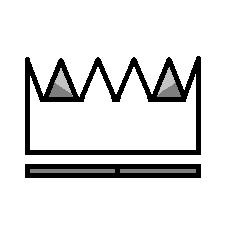

Sou um profissional multidisciplinar com formação em Engenharia Civil e especialização em Geoprocessamento, além de habilidades sólidas em desenvolvimento de software com foco em Python. Minha jornada profissional combina o conhecimento técnico de engenharia com soluções tecnológicas inovadoras.
Atuo em projetos que envolvem análise de dados geoespaciais, modelagem hidrodinâmica, desenvolvimento de aplicações para automação de processos e implementação de soluções de inteligência artificial para otimização de fluxos de trabalho.
{{ experiencia.descricao }}
{{ formacao.grau }}
{{ formacao.descricao }}
Certificação profissional que abrange bibliotecas como Pandas, NumPy, Matplotlib e técnicas avançadas de manipulação de dados.
Capacitação em técnicas avançadas de modelagem hidrológica para simulação de eventos extremos e gestão de recursos hídricos.
Formação completa em desenvolvimento de aplicações web utilizando o framework Django, incluindo autenticação, APIs e deploy.
Busco constantemente novas tecnologias e metodologias para solucionar problemas complexos.
Acredito no poder do trabalho em equipe e na troca de conhecimentos para alcançar resultados superiores.
Comprometo-me com a qualidade e precisão em cada projeto, buscando superar expectativas.
Invisto constantemente em meu desenvolvimento, mantendo-me atualizado nas áreas em que atuo.
Estou sempre aberto a novos desafios e oportunidades de colaboração.
Entre em Contato Baixar Currículo